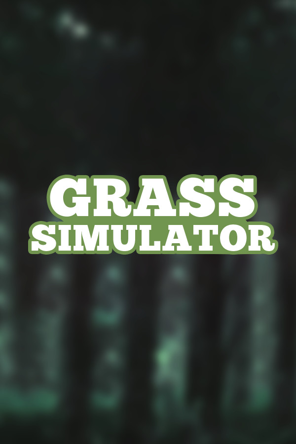

Grass Simulator
Grass Simulator
Details
|  | |
| Spielzeit | Nicht gespielt |
| Letzte Aktivität | Nie |
| Hinzugefügt | 19.12.2019 |
| Modifiziert | 12.12.2022 0:59:43 |
| Fertigstellungsstatus | Not Played |
| Bibliothek | Steam |
| Quelle | Steam |
| Plattform | PC (Windows) |
| Veröffentlichungsdatum | 01.04.2015 |
| Community Bewertungen | 50 |
| Kritiker Punkte | |
| Benutzerwertung | |
| Genre | Adventure Casual Indie Simulation |
| Entwickler | Daniel Davies |
| Verleger | Daniel Davies |
| Eigenschaft | Co-op Multiplayer Single Player Steam Karten 🦢 Cross Platform |
| Links | Community Hub Discussions News Store Page PCGamingWiki |
| Tag | Co-Op Cross-Platform Multiplayer |
Beschreibung
Strap it on and lock 'n' load in Grass Simulator, where you will Shoot, Loot and MOO! your way through multiple game modes revolved around...GRASS!. Grass Simulator will revolutionize the way you look at grass; Instead of it being that green stuff that you occasionally see in your garden that you never mow (Yes - We know you neglect it).
You play as Garry Rambler, a rogue mercenary that escaped from hell who has sworn to take revenge upon the illusive cows that lurk among the shadows whom murdered his family, stuck in a purgatory filled with nothing but cows, grass and more cows. Only equipped with his moustache, cliché 80's mullet and magnum revolver; the exact revolver he used to kill the legendary cow god that ordered his family to be executed, he must fend for himself in a cruel, unforgiving dimension.
● Classic Mode - Explore your environment equipped with your magnum, walk among the dense grass and trees and shoot cows that never seem to die.
● Dubstep Cow Mode - If being a cow isn't cool enough, how about DUBSTEP COWS?!
● Shooting Range - Test your aim at the shooting range, just try not to blow your foot off
● Snowfall – Walk around the snowy mountains, with cows that are pretty cold
● Multiplayer – Experience Multiplayer with 4-16 players, host and create your own servers
● Bad Disco – What could go wrong when you add cows to an outside Disco?
● Hell Fire – The grass has turned red and the map is on fire?!
You play as Garry Rambler, a rogue mercenary that escaped from hell who has sworn to take revenge upon the illusive cows that lurk among the shadows whom murdered his family, stuck in a purgatory filled with nothing but cows, grass and more cows. Only equipped with his moustache, cliché 80's mullet and magnum revolver; the exact revolver he used to kill the legendary cow god that ordered his family to be executed, he must fend for himself in a cruel, unforgiving dimension.
Key Features
● Classic Mode - Explore your environment equipped with your magnum, walk among the dense grass and trees and shoot cows that never seem to die.
● Dubstep Cow Mode - If being a cow isn't cool enough, how about DUBSTEP COWS?!
● Shooting Range - Test your aim at the shooting range, just try not to blow your foot off
● Snowfall – Walk around the snowy mountains, with cows that are pretty cold
● Multiplayer – Experience Multiplayer with 4-16 players, host and create your own servers
● Bad Disco – What could go wrong when you add cows to an outside Disco?
● Hell Fire – The grass has turned red and the map is on fire?!